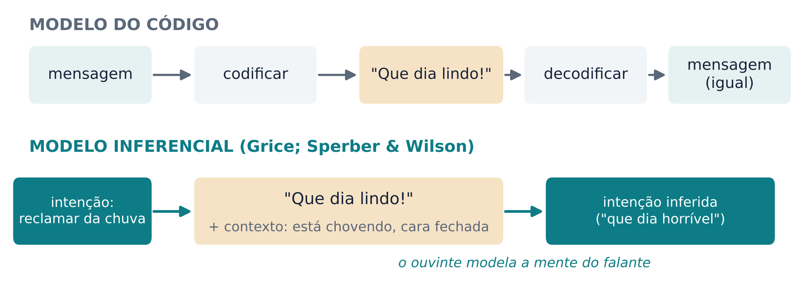
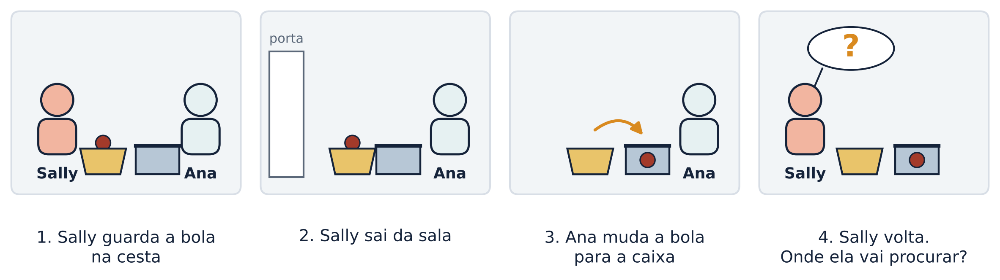
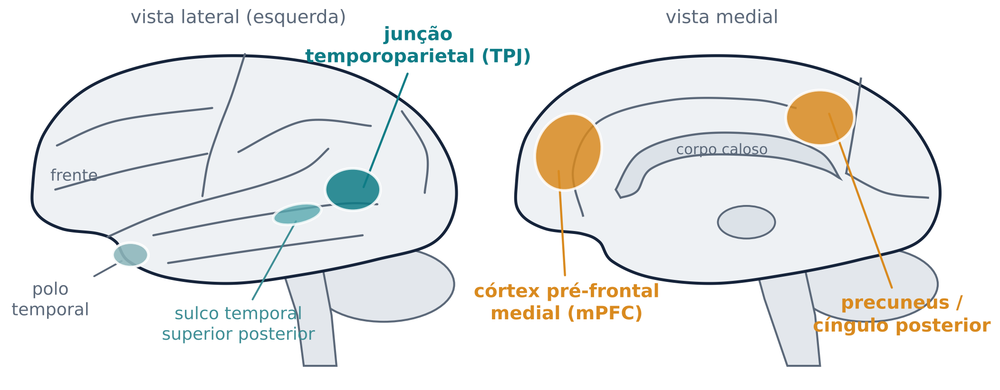
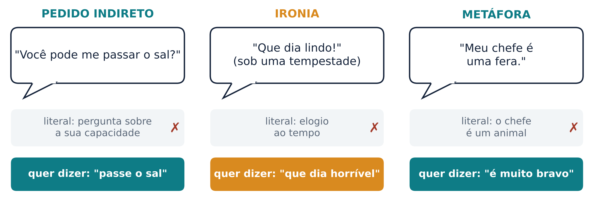
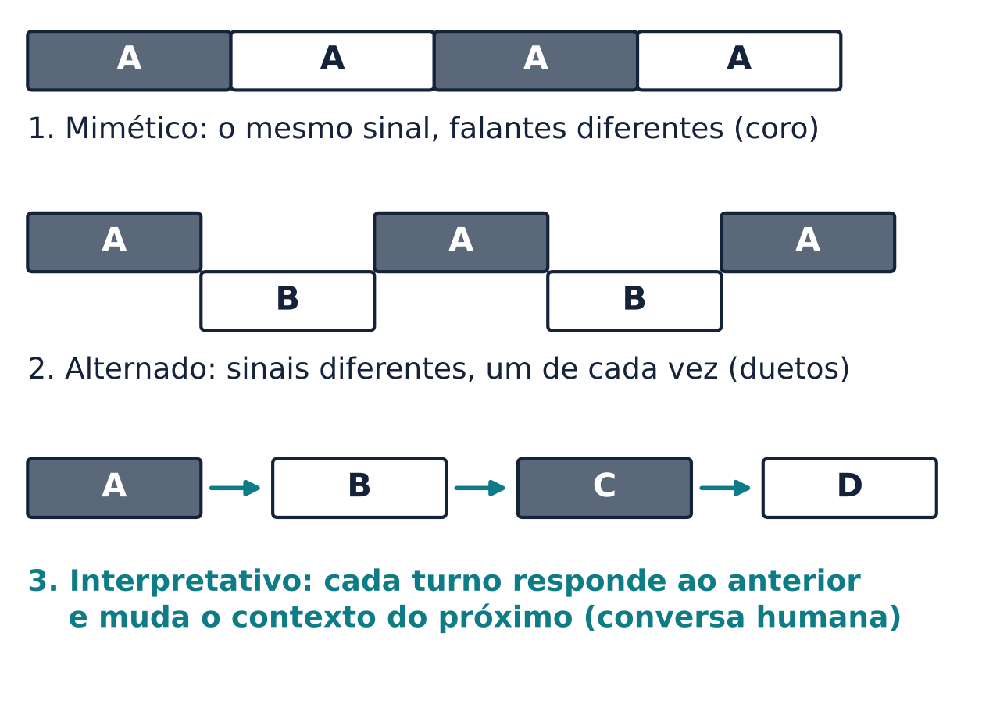
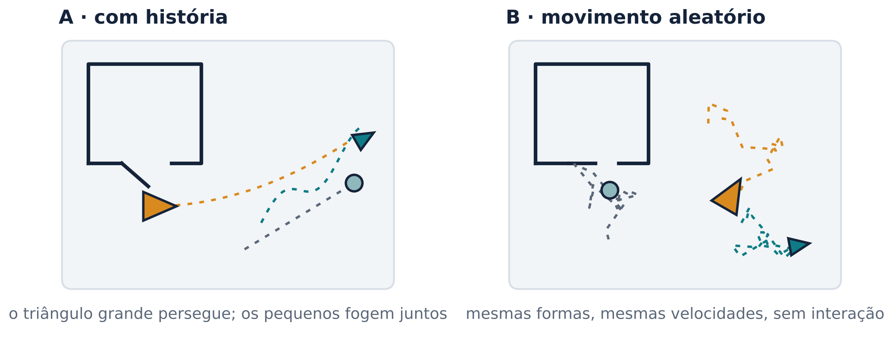

Para entender o que alguém quer dizer, o cérebro precisa imaginar o que essa pessoa pensa. E conversar é coordenar duas mentes em frações de segundo.
Imagine que você chega encharcado à parada de ônibus, depois de uma hora de chuva, e um colega diz: “Que dia lindo!”. Ninguém ali acha que ele está elogiando o tempo. Você entende o contrário do que as palavras dizem. Como?
Uma forma tradicional de pensar a comunicação é o modelo do código. O falante transforma uma mensagem em sinais (codifica), os sinais viajam, e o ouvinte faz a operação inversa (decodifica). Se os dois partilham o mesmo código, a mensagem chega igual. Esse modelo vem da teoria da comunicação de Shannon e Weaver, do fim dos anos 1940, e ainda orienta boa parte dos estudos de comunicação animal: o sinal carrega informação e a tarefa de quem percebe é decodificá-lo (Rossano, 2019). Ele explica bem um telégrafo. Explica mal o “que dia lindo!”.
O filósofo Paul Grice propôs outra ideia, que hoje chamamos de modelo inferencial. Para Grice, comunicar é ter a intenção de produzir um efeito na mente do outro e querer que o outro reconheça essa intenção (Levinson, 2019; Bara; Enrici; Adenzato, 2016). O ouvinte não apenas decodifica: ele infere o que o falante quer dizer, juntando o que foi dito, o contexto e o que sabe sobre o falante. A teoria da relevância, de Sperber e Wilson (1986), desenvolveu essa linha. Levinson (2019) dá um exemplo sem palavras. Numa mesa de reunião, você esfrega com força o próprio lábio superior olhando para um colega. Ele entende que tem espuma de café no bigode. Não existe um código para isso. O gesto funciona porque o colega percebe que você quer que ele perceba algo.
Mesmo frases simples exigem esse tipo de inferência. A mesma forma pode realizar ações muito diferentes: “O que você vai fazer hoje à noite?” pode ser o começo de um convite, e não uma pergunta sobre a sua rotina. Não há correspondência de um para um entre a forma de uma frase e a ação que ela realiza (Levinson, 2019).

Há boas razões para pensar que essa capacidade de comunicar intenções é, em parte, independente da língua. Crianças surdas que crescem sem acesso a uma língua de sinais inventam sistemas de gestos caseiros para se comunicar com a família. Pessoas com afasia grave conseguem sustentar uma comunicação complexa em casa com recursos mínimos, quase só com sinais de concordar e discordar (Levinson, 2019). Em estudos de neuroimagem, gerar uma mensagem para alguém e processar as palavras dessa mensagem dependem de regiões diferentes: num jogo de adivinhar palavras, o córtex pré-frontal medial respondeu à intenção comunicativa, e a região frontal inferior esquerda, da rede da linguagem, respondeu à dificuldade linguística (Bara; Enrici; Adenzato, 2016). Por isso, nesta aula, além da rede da linguagem que você viu nas aulas 5 e 6, entra em cena uma segunda rede: a que usamos para pensar sobre o que os outros pensam.
Teoria da mente é a capacidade de reconhecer que as pessoas têm estados mentais (crenças, desejos, intenções, emoções), de atribuir esses estados a si e aos outros, de entender que os estados mentais dos outros podem ser diferentes dos nossos e de usar isso para explicar e prever o que as pessoas fazem (Bara; Enrici; Adenzato, 2016). A expressão se popularizou com um artigo de Premack e Woodruff (1978) que perguntava, já no título, se o chimpanzé tem uma teoria da mente.
Como saber se alguém atribui crenças aos outros? Se a crença do outro for verdadeira, não dá para separar “o que ele pensa” de “o que é verdade”: basta responder pela realidade. O teste decisivo é o de crença falsa. Wimmer e Perner (1983) mostraram a crianças de 3 a 9 anos histórias em que um personagem guarda um objeto num lugar e, enquanto ele não vê, o objeto é levado para outro lugar. A pergunta era: onde o personagem vai procurar? As crianças de 3 e 4 anos erravam. Segundo os autores, a capacidade de representar a relação entre o que duas pessoas sabem surge e se firma “por volta dos 4 aos 6 anos”. Baron-Cohen, Leslie e Frith (1985) adaptaram a tarefa para uma brincadeira com bonecos, que ficou conhecida como o teste de Sally e Ana (Figura 2). Para acertar, a criança precisa dizer que Sally vai procurar na cesta, onde ela acha que a bola está, e não na caixa, onde a bola de fato está.

Crianças pequenas falham nos testes clássicos de crença falsa até por volta dos 4 anos (Levinson, 2019). Uma meta-análise que reuniu 178 estudos encontrou a mesma progressão com a idade em diferentes países e com diferentes versões da tarefa: os pré-escolares passam de um desempenho abaixo do acaso para um acima do acaso. Para os autores, isso indica uma mudança real na forma como a criança entende a mente, e não um efeito de detalhes da tarefa (Wellman; Cross; Watson, 2001).
Isso não quer dizer que bebês não percebam nada sobre a mente dos outros. Onishi e Baillargeon (2005) criaram uma tarefa não verbal e concluíram que bebês de 15 meses já preveem o comportamento de uma pessoa com base na crença dela sobre onde um brinquedo está escondido, mesmo quando essa crença é falsa. Como conciliar esse resultado com o erro das crianças de 3 anos? Uma proposta é distinguir uma leitura de mentes implícita, automática e presente muito cedo (e também em outras espécies), de uma leitura explícita, que a criança consegue expressar numa resposta e que aparece mais tarde (Frith; Frith, 2012; Levinson, 2019).
A teoria da mente se constrói aos poucos. Por volta dos 9 aos 12 meses, os bebês passam a seguir o olhar dos adultos, a usá-los como referência em situações novas e a imitar o que eles fazem com objetos. Começam a tratar os outros como agentes com objetivos e escolhas próprias (Tomasello, 2003, p. 21). Depois da crença falsa simples vêm formas mais complexas, como a crença de segunda ordem (“o Caio acha que a Bia acha que…”), que Perner e Wimmer (1985) estudaram em crianças de 5 a 10 anos.
A linguagem parece ajudar nesse desenvolvimento. Crianças surdas filhas de pais surdos, que usam fluentemente uma língua de sinais com elas, desenvolvem a teoria da mente bem mais depressa do que crianças surdas filhas de pais ouvintes que não sinalizam com fluência. Há várias explicações em disputa: a conversa obrigaria a criança a trocar de perspectiva o tempo todo; palavras como “achar” e “saber” ajudariam a pensar sobre a mente; frases do tipo “ela acha que…” dariam o formato para representar crenças falsas. A pesquisa ainda não permite escolher entre elas, mas indica com bastante clareza que aprender uma língua facilita entender que os outros têm vidas mentais próprias (Tomasello, 2003, p. 277-279).
O teste de crença falsa não mede se a criança “gosta” dos outros ou presta atenção neles. Mede se ela consegue manter na cabeça, ao mesmo tempo, duas versões do mundo: como ele é e como outra pessoa pensa que ele é. Na conversa, fazemos isso o tempo todo.
E o autismo? O estudo de 1985 ficou famoso porque comparou crianças autistas com crianças com síndrome de Down e crianças com desenvolvimento típico. Embora tivessem idade mental mais alta que a dos outros grupos, só as crianças autistas falharam em atribuir crenças aos bonecos (Baron-Cohen; Leslie; Frith, 1985). Estudos posteriores mostraram um quadro mais variado: algumas pessoas autistas passam a atribuir estados mentais mais tarde (Happé, 1993). O teste não serve como diagnóstico nem como resumo de uma pessoa.
Quando pensamos sobre o que outra pessoa pensa, um conjunto de regiões cerebrais se ativa de forma bastante consistente. Ele é chamado de rede de mentalização ou rede da teoria da mente (Figura 3). As principais regiões são o córtex pré-frontal medial (mPFC), na face interna do lobo frontal; o precuneus, na face interna do lobo parietal; e, dos dois lados, a parte posterior do sulco temporal superior e a vizinha junção temporoparietal (TPJ, onde o lobo temporal encontra o parietal) (Bara; Enrici; Adenzato, 2016). Os polos temporais também costumam aparecer (Castelli et al., 2000).

Essa rede aparece com tarefas muito diferentes. Uma das mais elegantes é a de Saxe e Kanwisher (2003). Elas compararam histórias sobre as crenças de um personagem com histórias de controle que também envolviam uma representação falsa, mas sem mente, como uma fotografia que ficou desatualizada. A TPJ respondeu às histórias sobre estados mentais, e não às representações falsas sem mente, nem a histórias que descreviam pessoas fisicamente. Ou seja, ela não responde a “qualquer coisa desatualizada” nem à simples presença de uma pessoa, e sim ao raciocínio sobre o que alguém pensa.
Castelli e colegas (2000) usaram tomografia por emissão de pósitrons (PET) enquanto voluntários assistiam a animações mudas de formas geométricas. Quando o movimento das formas levava a atribuir estados mentais, e não apenas a descrever ações simples, aumentava a atividade no córtex pré-frontal medial, na TPJ e no sulco temporal superior, nos polos temporais e em áreas visuais. Em jogos de dois jogadores, o mPFC também se ativa mais quando as pessoas acham que estão jogando contra outra pessoa do que contra um computador (Bara; Enrici; Adenzato, 2016).
Dados de lesão ajudam a mostrar que uma região é necessária, e não só ativada. Pacientes com lesão na TPJ esquerda falharam em tarefas em que precisavam raciocinar sobre a crença de outra pessoa (Samson et al., 2004).
Comunicar uma intenção ativa a mesma rede. O grupo de Bara, em Turim, propõe que essa rede é recrutada de forma progressiva conforme o tipo de intenção. Em estudos com histórias em quadrinhos, entender uma intenção privada (alguém pega um cacho de uvas para comer) ativou a TPJ direita e o precuneus. Intenções sociais acrescentaram o mPFC. Só as intenções comunicativas, com dois personagens interagindo, ativaram a rede inteira, incluindo a TPJ esquerda (Bara; Enrici; Adenzato, 2016). A rede responde também a intenções comunicadas por gestos, e não só por palavras.
A rede entra também quando produzimos comunicação. No estudo de Sassa e colegas, descrito no mesmo capítulo, as pessoas viam vídeos curtos de alguém usando um objeto e, conforme a instrução, falavam com essa pessoa ou apenas descreviam a cena. As duas condições envolviam falar, e as duas ativaram a região frontal inferior esquerda ligada à produção da linguagem, que não diferiu entre elas. Mas falar com alguém ativou mais o mPFC, as duas TPJ e os polos temporais (Bara; Enrici; Adenzato, 2016).
Cuidados. Primeiro, a neuroimagem mostra que uma região participa de uma tarefa, mas não prova que ela é necessária; por isso os estudos com pacientes são importantes (Bara; Enrici; Adenzato, 2016). Segundo, uma região não faz uma coisa só. O córtex temporoparietal, sobretudo à direita, também faz parte de uma rede de atenção que detecta estímulos relevantes, em especial os inesperados (Corbetta; Shulman, 2002). Terceiro, não existe um “centro da teoria da mente”: é uma rede, e o papel de cada região ainda está sendo descrito.
A pragmática estuda como o sentido depende do uso: quem fala, para quem, em que situação e com que intenção. Em muitos fenômenos pragmáticos, o sentido literal e o pretendido não coincidem: pedidos indiretos, implicaturas, sarcasmo, metáfora e ironia (Bara; Enrici; Adenzato, 2016).
Grice (1975) propôs que conversar é uma atividade cooperativa. O ouvinte supõe que o falante segue um princípio de cooperação: contribuir para a conversa da forma que o propósito da conversa pede. Grice detalhou esse princípio em quatro categorias de máximas: diga o quanto for preciso, nem mais nem menos (quantidade); não diga o que acredita ser falso nem aquilo para o que não tem evidência (qualidade); seja relevante (relação); seja claro, breve e ordenado (modo) (Grice, 1975; Mildner, 2008, p. 212).
Um exemplo do próprio Grice, adaptado: A diz “Acabou minha gasolina”. B responde: “Tem um posto ali na esquina”. B não disse que o posto está aberto nem que vende gasolina. Mas, se B está cooperando, a resposta só é relevante se o posto puder resolver o problema, e A entende isso (Grice, 1975). Esse conteúdo que o falante comunica sem dizer se chama implicatura. Ele é inferido, e não codificado.
O caso mais interessante é quando o falante viola de propósito uma máxima. Quem diz “que dia lindo!” sob uma tempestade diz algo tão obviamente falso que o ouvinte, supondo que o falante coopera, procura outro sentido (Grice, 1975). A Figura 4 mostra três casos comuns em que o literal e o pretendido se separam.

Pedidos indiretos. “Você pode me passar o sal?” tem forma de pergunta sobre capacidade, mas ninguém responde só “posso”. Respostas indiretas também exigem inferência. Num estudo descrito por Bara, Enrici e Adenzato (2016), respostas indiretas num diálogo falado, em que o sentido do falante ficava implícito, ativaram sobretudo o mPFC e a TPJ direita, em comparação com respostas diretas.
Ironia. Na ironia, a intenção comunicativa muitas vezes é o oposto do sentido literal. Para entendê-la, o ouvinte precisa representar o que o falante pensa e sabe; muitas vezes, uma crença de segunda ordem: “ele sabe que eu sei que está chovendo”. Spotorno e colegas (2012) usaram histórias curtas que terminavam com a mesma frase, por exemplo “Hoje à noite fizemos uma apresentação excelente”, dita depois de uma apresentação ótima (sentido literal) ou de uma péssima (ironia). As frases irônicas ativaram mais o mPFC, as duas TPJ e o precuneus, isto é, a rede de mentalização (Bara; Enrici; Adenzato, 2016). Na metáfora, um estudo encontrou aumento de atividade na TPJ direita e no frontal medial superior para frases figuradas em comparação com literais (Bara; Enrici; Adenzato, 2016).
Literal primeiro? Há um debate clássico sobre a ordem do processamento. Numa leitura serial do modelo de Grice, o ouvinte calcularia primeiro o sentido literal, perceberia que ele não faz sentido e só então chegaria ao sentido pretendido; a ironia deveria, então, custar sempre mais tempo. Gibbs (1986) mostrou que, quando o contexto apoia a ironia, a mesma frase é lida tão depressa no contexto irônico quanto no literal. Esse resultado favorece a ideia de acesso direto: com contexto suficiente, o sentido irônico pode ser construído sem passar antes pelo literal. Giora (1997) propôs uma posição intermediária, a hipótese da saliência graduada: o sentido mais saliente (o mais frequente, o mais convencional) é ativado primeiro, seja ele literal ou não. Por isso, uma expressão irônica muito usada, como “Que beleza!” diante de uma notícia ruim, tem o sentido irônico disponível de imediato.
O papel do hemisfério direito. Muitos pacientes com lesões no hemisfério direito mantêm uma boa competência gramatical, mas têm dificuldade com o sentido pretendido ou implícito, com sarcasmo, ironia e humor, com a ideia central de uma história e com as regras da conversa. Isso não acontece com todos os pacientes, e problemas parecidos aparecem também depois de lesões pré-frontais esquerdas ou bilaterais. Por isso não dá para dizer que a pragmática “mora” no hemisfério direito (Mildner, 2008, p. 210-212). Pessoas com lesões no córtex pré-frontal medial têm dificuldade em inferir a intenção do falante, e doenças neurodegenerativas que afetam o lobo frontal prejudicam a compreensão de sarcasmo, metáforas e pedidos indiretos (Bara; Enrici; Adenzato, 2016).
Autismo. Happé (1993) testou, em pessoas autistas e em crianças com desenvolvimento típico, uma previsão da teoria da relevância: o tipo de linguagem figurada que alguém entende depende do nível de teoria da mente que tem (nenhum, só de primeira ordem ou também de segunda ordem). Os resultados apoiaram a previsão e mostraram uma ligação estreita entre entender pessoas e entender o que elas querem dizer.
A conversa face a face é o ambiente natural da linguagem. É nela que as crianças aprendem a falar e é nela que usamos a maior parte das palavras que dizemos: em média, mais de 15 mil palavras por dia, em rajadas curtas de cerca de dois segundos, alternadas com as dos outros (Levinson, 2019). E a conversa tem uma propriedade surpreendente: a precisão do tempo.
Turnos em cerca de 200 ms. Stivers e colegas (2009) mediram o intervalo entre o fim de uma pergunta e o início da resposta em 10 línguas, de comunidades indígenas tradicionais a grandes línguas do mundo. Em todas, as pessoas evitavam falar ao mesmo tempo e evitavam silêncios. As médias variavam entre as línguas, mas dentro de uma faixa de 250 ms em torno da média geral: a diferença é de grau, não de natureza. O intervalo mais comum fica em torno de 200 ms, e a fala sobreposta ocupa só cerca de 5% do tempo de fala (Levinson, 2019).
Planejar enquanto ouve. Duzentos milissegundos é muito pouco. Planejar e produzir uma única palavra leva cerca de 600 ms; uma oração, 1 s ou mais. A conta só fecha se o ouvinte começar a planejar a resposta antes de o outro terminar. Para isso, ele precisa prever duas coisas: que ação o turno realiza (uma pergunta? um convite?) e quando o turno vai acabar. A resposta é preparada cedo e guardada até o momento certo (Levinson, 2019). Bögels, Magyari e Levinson (2015) registraram o EEG de pessoas respondendo a perguntas de um quiz. Os sinais de planejamento da resposta começavam assim que a resposta podia ser lembrada, em até meio segundo, às vezes vários segundos antes do fim da pergunta.
O tempo tem significado. Como responder rápido é a norma, demorar comunica algo. Depois de um pedido, uma pausa costuma anunciar uma recusa (Levinson, 2019). Respostas preferidas (aceitar, concordar) vêm sem demora, em geral em até 0,2 s; as não preferidas (recusar, discordar) costumam vir com atraso, hesitação e justificativas (Rossano, 2019). Você conhece isso: quando o amigo responde “bom…” depois de um silêncio, você já sabe que vem um “não”.
Cérebros acoplados. Stephens, Silbert e Hasson (2010) usaram ressonância magnética funcional para registrar a atividade cerebral de uma pessoa contando uma história e de ouvintes escutando essa história. A atividade dos ouvintes acompanhou a da falante no espaço e no tempo, em geral com um pequeno atraso. Esse acoplamento desapareceu quando a comunicação falhava. Em algumas regiões, a atividade dos ouvintes antecipava a da falante, e quanto maior esse acoplamento antecipatório, melhor a compreensão da história. Não há nada de misterioso aqui: o acoplamento aparece porque o ouvinte reconstrói a mensagem que a falante produziu e, às vezes, prevê o que vem a seguir.
A máquina de interação. Levinson (2019) propõe que os humanos têm uma “máquina de interação” (interaction engine): um conjunto de habilidades, instintos e motivações para a interação face a face que vem antes da língua e a torna possível. Ela inclui reconhecer intenções comunicativas, alternar turnos com tempo preciso, organizar a conversa em pares de ações (pergunta e resposta, oferta e aceitação) e reparar mal-entendidos. Três argumentos apoiam a ideia. Ela é universal: alternância de turnos, reparo e sequências de ações têm a mesma organização em línguas não aparentadas, e o “hã?” usado para pedir repetição tem forma parecida em uma dúzia de línguas de cinco continentes. Ela aparece cedo: interações recíprocas entre bebês e cuidadores existem desde pelo menos os 3 meses de vida. E ela tem raízes em outros primatas.
Rossano (2019) distingue três tipos de alternância de turnos (Figura 5). Na mimética, dois animais produzem o mesmo sinal evitando sobreposição. Na alternada, sinais diferentes se revezam, como no canto de muitas aves. Na interpretativa, cada turno responde ao anterior e muda o contexto do próximo; quando a resposta não é a esperada, quem começou insiste ou corrige. Esse terceiro tipo está bem documentado em humanos, e Rossano descreve trocas gestuais de bonobos, gorilas e orangotangos (sobretudo entre mães e filhotes) com essa estrutura, com respostas que chegam tão rápido quanto na conversa humana.

Saguis também alternam turnos. A alternância vocal de turnos foi descrita em vários ramos dos primatas, de lêmures a gibões (Levinson, 2019). Um exemplo bem estudado é o sagui-de-tufo-branco, Callithrix jacchus, um primata do Novo Mundo. Takahashi, Narayanan e Ghazanfar (2013) mediram as trocas vocais naturais desses saguis. Eles alternam a vez em sequências longas, e essa alternância segue a dinâmica de osciladores acoplados, parecida com a proposta para a conversa humana. Os saguis compartilham conosco a criação cooperativa dos filhotes e o hábito de vocalizar muito. Como estão num ramo da árvore evolutiva distante do nosso, os autores interpretam a semelhança como evolução convergente. Isso oferece uma alternativa às hipóteses de que a comunicação humana teria começado pelos gestos. A alternância também se desenvolve nos filhotes: chamados dos pais que respondem aos do filhote fazem o filhote produzir vocalizações mais maduras (Takahashi; Fenley; Ghazanfar, 2016). A escala de tempo é outra, mas a lógica é parecida. Entre os primatas, a alternância vocal parece especialmente associada a espécies que formam pares (Levinson, 2019).
No Laboratório de Mentes, você foi o participante de quatro experimentos. Os resultados da sua turma podem ser diferentes do que se descreve abaixo; o importante é entender o que cada experimento testava e por que se espera esse padrão.
Experimento 1 · Formas com intenção. Você viu dois filmes com as mesmas formas e a mesma casa (Figura 6). No filme com história, uma forma persegue as outras; no aleatório, cada forma se move sem relação com as demais. Espera-se que quase todos deem nota mais alta ao filme com história e usem, ao descrevê-lo, verbos de intenção e emoção (“persegue”, “foge”, “tem medo”). Foi o que Heider e Simmel (1944) observaram com o filme original, de um triângulo grande, um pequeno, um círculo e uma casa: dos 34 participantes, só um descreveu o filme quase todo em termos geométricos; os demais contaram as ações de seres animados, quase sempre pessoas. O que dispara essa leitura é o movimento contingente, em que uma forma reage à outra. Como você viu na seção 3, animações assim ativam a rede de mentalização (Castelli et al., 2000). Se alguém viu intenções também no filme aleatório, isso também é informativo: basta pouca coincidência para o cérebro enxergar agentes.

Experimento 2 · Ironia ou não? As mesmas frases apareceram depois de contextos sinceros ou irônicos. Se o sentido literal fosse sempre calculado primeiro, a ironia seria sempre bem mais lenta. Com contexto forte, espera-se acerto alto nas duas condições e uma diferença de tempo pequena, às vezes nula, com muita variação entre pessoas, o que combina melhor com Gibbs (1986) e Giora (1997). As situações ambíguas, sem rosto nem entonação, devem dividir a turma: é aí que a prosódia da aula 9 faria diferença.
Experimento 3 · Sua vez de falar. Em metade das perguntas, a resposta podia ser decidida logo no começo; na outra metade, só na última palavra. Espera-se que, nas perguntas “cedo”, o intervalo fique perto do ritmo da conversa e às vezes seja negativo (você respondeu antes do fim), e que, nas perguntas “tarde”, ele seja centenas de milissegundos maior. É o mesmo raciocínio de Bögels, Magyari e Levinson (2015): só dá para responder rápido quando dá para planejar durante a escuta. Lembre as diferenças em relação à conversa real: tocar na tela é mais rápido que falar, e o texto escrito, com o ponto de interrogação, mostra quando a pergunta acaba.
Experimento 4 · Quem pensa o quê. Era o teste de Sally e Ana em versão adulta, com perguntas sobre a realidade, sobre uma crença de primeira ordem e sobre uma crença de segunda ordem, como na história do sorveteiro de Perner e Wimmer (1985), adaptada para um pipoqueiro. Adultos quase não erram, mas a pergunta de segunda ordem tende a ser mais lenta. É o mesmo encaixe de crenças que a ironia exige.
Por que o modelo do código não basta para explicar como alguém entende “que dia lindo!” debaixo de chuva?
Resposta
Porque o código (as palavras) diz o contrário do que o falante quer comunicar. Para entender, o ouvinte precisa combinar a frase com o contexto e com o que sabe sobre o falante, e inferir a intenção dele. É o que propõe o modelo inferencial de Grice.
Por que o teste precisa usar uma crença falsa? O que daria errado com uma crença verdadeira?
Resposta
Se a crença do outro for verdadeira, a criança pode acertar só olhando para a realidade, sem pensar no que o outro pensa. Só quando a crença é falsa a resposta certa (“na cesta”) é diferente da realidade (“na caixa”), e acertar mostra que ela representou a crença do outro.
Bebês de 15 meses parecem prever a ação de alguém com crença falsa, mas crianças de 3 anos erram o teste de Sally e Ana. Como esses resultados podem ser conciliados?
Resposta
Distinguindo uma leitura de mentes implícita, automática e precoce, medida em tarefas não verbais, de uma leitura explícita, que a criança precisa expressar numa resposta e que aparece por volta dos 4 anos. As duas podem ter bases e ritmos de desenvolvimento diferentes.
Qual é a lógica do controle com a fotografia desatualizada no estudo de Saxe e Kanwisher (2003)?
Resposta
A foto desatualizada tem a mesma estrutura lógica de uma crença falsa (representa o mundo de um jeito que deixou de ser verdade), mas não envolve mente. Se uma região responde à crença falsa e não à foto, ela não está lidando com representações desatualizadas em geral, e sim com estados mentais.
No estudo de Sassa e colegas, falar com alguém e descrever a cena envolviam falar. Por que essa comparação é útil?
Resposta
Porque a produção da fala está presente nas duas condições; a diferença entre elas isola a intenção comunicativa. A região frontal inferior esquerda da produção respondeu igual nas duas; o mPFC e as TPJ responderam mais quando havia alguém a quem comunicar.
Use as máximas de Grice para explicar como entendemos uma ironia. Que dado de tempo de leitura desafia a versão serial desse modelo?
Resposta
A ironia diz algo obviamente falso; supondo que o falante coopera, o ouvinte busca outro sentido. Na versão serial, o literal vem primeiro e é rejeitado, então a ironia custaria sempre mais tempo. Gibbs (1986) mostrou que, com contexto que apoia a ironia, a frase irônica é lida tão rápido quanto a mesma frase no sentido literal.
Se produzir uma palavra leva cerca de 600 ms, como conseguimos responder em cerca de 200 ms?
Resposta
Planejando a resposta enquanto o outro ainda fala. O ouvinte prevê a ação e o fim do turno, começa a preparar a resposta cedo e a guarda até o momento certo. No EEG, o planejamento começa assim que a resposta pode ser lembrada, antes do fim da pergunta.
Por que a alternância de turnos em saguis interessa a quem estuda a origem da linguagem humana?
Resposta
Porque mostra que a estrutura temporal da conversa (alternar a vez, com dinâmica de osciladores acoplados) existe num primata vocal distante de nós, que também cria os filhotes de forma cooperativa. Isso sugere evolução convergente ligada à cooperação e oferece uma alternativa vocal às hipóteses de origem gestual.
BARA, B. G.; ENRICI, I.; ADENZATO, M. At the core of pragmatics: the neural substrates of communicative intentions. In: HICKOK, G.; SMALL, S. L. (org.). Neurobiology of language. London: Academic Press, 2016. p. 675-685. DOI: https://doi.org/10.1016/B978-0-12-407794-2.00054-7.
BARON-COHEN, S.; LESLIE, A. M.; FRITH, U. Does the autistic child have a “theory of mind”? Cognition, v. 21, n. 1, p. 37-46, 1985. DOI: https://doi.org/10.1016/0010-0277(85)90022-8.
BÖGELS, S.; MAGYARI, L.; LEVINSON, S. C. Neural signatures of response planning occur midway through an incoming question in conversation. Scientific Reports, v. 5, 12881, 2015. DOI: https://doi.org/10.1038/srep12881.
CASTELLI, F. et al. Movement and mind: a functional imaging study of perception and interpretation of complex intentional movement patterns. NeuroImage, v. 12, n. 3, p. 314-325, 2000. DOI: https://doi.org/10.1006/nimg.2000.0612.
CORBETTA, M.; SHULMAN, G. L. Control of goal-directed and stimulus-driven attention in the brain. Nature Reviews Neuroscience, v. 3, n. 3, p. 201-215, 2002. DOI: https://doi.org/10.1038/nrn755.
FRITH, C. D.; FRITH, U. Mechanisms of social cognition. Annual Review of Psychology, v. 63, p. 287-313, 2012. DOI: https://doi.org/10.1146/annurev-psych-120710-100449.
GIBBS, R. W. On the psycholinguistics of sarcasm. Journal of Experimental Psychology: General, v. 115, n. 1, p. 3-15, 1986. DOI: https://doi.org/10.1037/0096-3445.115.1.3.
GIORA, R. Understanding figurative and literal language: the graded salience hypothesis. Cognitive Linguistics, v. 8, n. 3, p. 183-206, 1997. DOI: https://doi.org/10.1515/cogl.1997.8.3.183.
GRICE, H. P. Logic and conversation. In: COLE, P.; MORGAN, J. L. (org.). Syntax and semantics: v. 3: speech acts. New York: Academic Press, 1975. p. 41-58.
HAPPÉ, F. G. E. Communicative competence and theory of mind in autism: a test of relevance theory. Cognition, v. 48, n. 2, p. 101-119, 1993. DOI: https://doi.org/10.1016/0010-0277(93)90026-R.
HEIDER, F.; SIMMEL, M. An experimental study of apparent behavior. The American Journal of Psychology, v. 57, n. 2, p. 243-259, 1944. DOI: https://doi.org/10.2307/1416950.
LEVINSON, S. C. Interactional foundations of language: the interaction engine hypothesis. In: HAGOORT, P. (org.). Human language: from genes and brains to behavior. Cambridge, MA: MIT Press, 2019. p. 189-200.
MILDNER, V. The cognitive neuroscience of human communication. New York: Lawrence Erlbaum Associates, 2008.
ONISHI, K. H.; BAILLARGEON, R. Do 15-month-old infants understand false beliefs? Science, v. 308, n. 5719, p. 255-258, 2005. DOI: https://doi.org/10.1126/science.1107621.
PERNER, J.; WIMMER, H. “John thinks that Mary thinks that…”: attribution of second-order beliefs by 5- to 10-year-old children. Journal of Experimental Child Psychology, v. 39, n. 3, p. 437-471, 1985. DOI: https://doi.org/10.1016/0022-0965(85)90051-7.
PREMACK, D.; WOODRUFF, G. Does the chimpanzee have a theory of mind? Behavioral and Brain Sciences, v. 1, n. 4, p. 515-526, 1978. DOI: https://doi.org/10.1017/S0140525X00076512.
ROSSANO, F. The structure and timing of human versus primate social interaction. In: HAGOORT, P. (org.). Human language: from genes and brains to behavior. Cambridge, MA: MIT Press, 2019. p. 201-219.
SAMSON, D. et al. Left temporoparietal junction is necessary for representing someone else’s belief. Nature Neuroscience, v. 7, n. 5, p. 499-500, 2004. DOI: https://doi.org/10.1038/nn1223.
SAXE, R.; KANWISHER, N. People thinking about thinking people: the role of the temporo-parietal junction in “theory of mind”. NeuroImage, v. 19, n. 4, p. 1835-1842, 2003. DOI: https://doi.org/10.1016/S1053-8119(03)00230-1.
SPERBER, D.; WILSON, D. Relevance: communication and cognition. Oxford: Blackwell, 1986.
SPOTORNO, N. et al. Neural evidence that utterance-processing entails mentalizing: the case of irony. NeuroImage, v. 63, n. 1, p. 25-39, 2012. DOI: https://doi.org/10.1016/j.neuroimage.2012.06.046.
STEPHENS, G. J.; SILBERT, L. J.; HASSON, U. Speaker–listener neural coupling underlies successful communication. Proceedings of the National Academy of Sciences of the United States of America, v. 107, n. 32, p. 14425-14430, 2010. DOI: https://doi.org/10.1073/pnas.1008662107.
STIVERS, T. et al. Universals and cultural variation in turn-taking in conversation. Proceedings of the National Academy of Sciences of the United States of America, v. 106, n. 26, p. 10587-10592, 2009. DOI: https://doi.org/10.1073/pnas.0903616106.
TAKAHASHI, D. Y.; FENLEY, A. R.; GHAZANFAR, A. A. Early development of turn-taking with parents shapes vocal acoustics in infant marmoset monkeys. Philosophical Transactions of the Royal Society B: Biological Sciences, v. 371, n. 1693, 20150370, 2016. DOI: https://doi.org/10.1098/rstb.2015.0370.
TAKAHASHI, D. Y.; NARAYANAN, D. Z.; GHAZANFAR, A. A. Coupled oscillator dynamics of vocal turn-taking in monkeys. Current Biology, v. 23, n. 21, p. 2162-2168, 2013. DOI: https://doi.org/10.1016/j.cub.2013.09.005.
TOMASELLO, M. Constructing a language: a usage-based theory of language acquisition. Cambridge, MA: Harvard University Press, 2003.
WELLMAN, H. M.; CROSS, D.; WATSON, J. Meta-analysis of theory-of-mind development: the truth about false belief. Child Development, v. 72, n. 3, p. 655-684, 2001. DOI: https://doi.org/10.1111/1467-8624.00304.
WIMMER, H.; PERNER, J. Beliefs about beliefs: representation and constraining function of wrong beliefs in young children’s understanding of deception. Cognition, v. 13, n. 1, p. 103-128, 1983. DOI: https://doi.org/10.1016/0010-0277(83)90004-5.
Material de estudo da disciplina Bases neurais da comunicação humana (UFRN), Prof. Daniel Y. Takahashi. Texto e figuras elaborados para o curso; as fontes estão nas Referências.